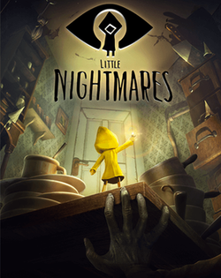
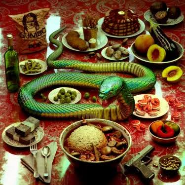

Unity Game Development Project
I'm currently working on a Unity Game Project for my game development class. The game is an escape room style game where the player has to explore a classroom, find clues, and solve puzzles to escape.
Computer Science Student

My name is Cornelius Moore. I am a Computer Science student at Georgia State University. I am interested in computers, technology, and learning new skills.
When I was younger, I would help my parents fix and set up things like cell phones and Wi-Fi routers. Over time, working with technology became something I enjoyed and something that helps me stay calm and focused.
What I like about Computer Science is that there are many different ways to create and solve problems. There is not just one path to follow, which makes the field interesting to me. Right now, I am learning web programming and game development, and game development is one of the areas I am most excited about.
After graduation, I want to start my career in entry-level IT and gain experience working with technology. Later on, I would like to move into cybersecurity and continue building my skills in that area.
I'm currently working on a Unity Game Project for my game development class. The game is an escape room style game where the player has to explore a classroom, find clues, and solve puzzles to escape.
The Unique Number Project was one of my first majoor project assignments where I worked on finding a nummber that only appears once in a list of numbers. The main goal was to take a list as input and determine which number was Unique compared to the other values.


Email:
EMAIL